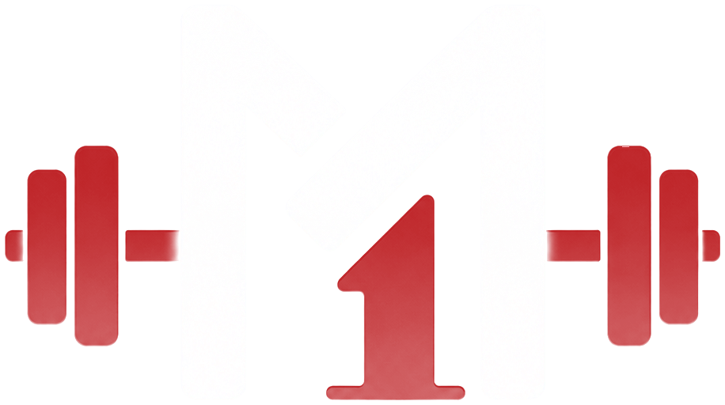

← galeria · Guia de estilo

Guia de estilo · identidade vermelha
#EC2C2E--accent · --fill-accent
#BA2324--accent-2 (fim do gradiente)
#EC2C2E--text-accent (texto em vermelho)
#050607--surface-0 · fundo do app
#0C0F14--surface-1 · cards
#14171D--surface-2 · chips, inputs
#1E2329--surface-3 · trilhas
#8A8F98--text-secondary
#FFFFFF--text-primary · --on-accent
#FFA94D--danger · erro e destrutivo
#8A8F98 e #FFFFFF vêm do painel PALETA DE CORES da referência. Os outros foram
ajustados: #050607, #0C0F14 e #EC2C2E são as novas cores base.
--surface-2, --surface-3, --text-muted e
--accent-2 são derivados — o app precisa deles para chips, trilhas de progresso e o
gradiente do botão. O gradiente usa 180deg (escurece para baixo): 0,79 ×
#EC2C2E = #BA2324.
--text-accent agora é o mesmo que --accent (#EC2C2E),
porque o novo vermelho é bem mais claro e legível como texto sobre #050607.
--danger (#FFA94D) é âmbar, não vermelho, de propósito,
para separar alerta de marca. Veja a comparação em “Erro e destrutivo”, abaixo.
--fs-4xl / 700
3 / 7 treinos
--fs-2xl / 700
Título de tela
--fs-lg / 700
Dia 1 – Peito e Tríceps
--fs-md / 400
Texto corrido da interface
--fs-xs / 400
Peito · Tríceps · Ombros
.eyebrow (--fs-2xs)
Esta semana
Uma família só, dois pesos — como a folha define. Isso remove três fontes do
bundle (Sora, Manrope, JetBrains Mono). O token --font-mono continua existindo com
esse nome, mas agora aponta para Poppins: o papel dele é “micro-label em caixa alta com
tracking largo”, não “monoespaçada”. Todos os tamanhos (--fs-*) e a escala
de 150% ficam iguais — este redesign não mexe em dimensão de texto.
pi-dumbbellpi-musclepi-flamepi-timerpi-targetpi-homepi-historypi-settingspi-buildingpi-playpi-chevron-downpi-chevron-rightpi-chestpi-corepi-backpi-legspi-shouldersti-checkti-plusti-minusti-pencilti-trashti-shareti-arrow-leftti-tagsti-calendar-eventti-databaseti-text-sizeti-device-floppy
Os 18 PNGs acima são recortes reais da arte de referência — nenhum foi redesenhado
em SVG. Cada um é line art com transparência, aplicado como mask-image, então
um arquivo serve todos os estados de cor: o mesmo ic-tab-home.png fica
vermelho quando a aba está ativa e cinza quando não está.
Os glifos utilitários (embaixo) não existem em nenhuma das imagens de referência,
logo não há PNG para recortar. Eles continuam na webfont que o app já empacota e herdam a paleta
nova via currentColor. Detalhes e limites de resolução no README.md.
.day.featured, o do selo “Próximo treino”). Nos demais dias o mesmo botão
vira só o glifo, num círculo de mesma altura — no app basta não passar featured,
a regra é .day:not(.featured) .day-start. A classe .icon-only
existe só para demonstrar a variante fora de um card de dia, como acima.
As duas linhas acima mostram por que o --danger saiu do vermelho: “Ativa”
usa --text-accent (é destaque de marca, não aviso) e “Não pode ser
desfeito” usa --danger. Com os dois em vermelho, eram a mesma cor para
quem passa o olho — e “Excluir” lia como uma ação comum ao lado de “Salvar”.
O par que importa é danger vs --text-accent (não vs
--accent), porque são esses dois que aparecem juntos. Eles estão separados em
dois eixos: matiz 358,5° → 31° (~32° de diferença) e luminância 0,223 → 0,502
(2,0:1). O eixo de luminância é o que sustenta a distinção em protanopia e
deuteranopia — lá o matiz colapsa, o claro/escuro não. Cor também não é o único sinal: toda ação
destrutiva carrega o glifo de lixeira e uma confirmação.
O que isso custa: abre mão da convenção “vermelho = destrutivo”. Se você
preferir manter vermelho e separar só por profundidade, é trocar
--danger/--bg-danger/--border-danger em
tokens.css — nada mais no CSS precisa mudar.
assets/pattern-dots.png — o halftone vermelho do painel PATTERN / TEXTURAS.
Uso: fundo da splash e, se quiser, do card da semana. Deve ficar sempre discreto
(opacity ≤ 0.5); ele não é elemento de leitura.